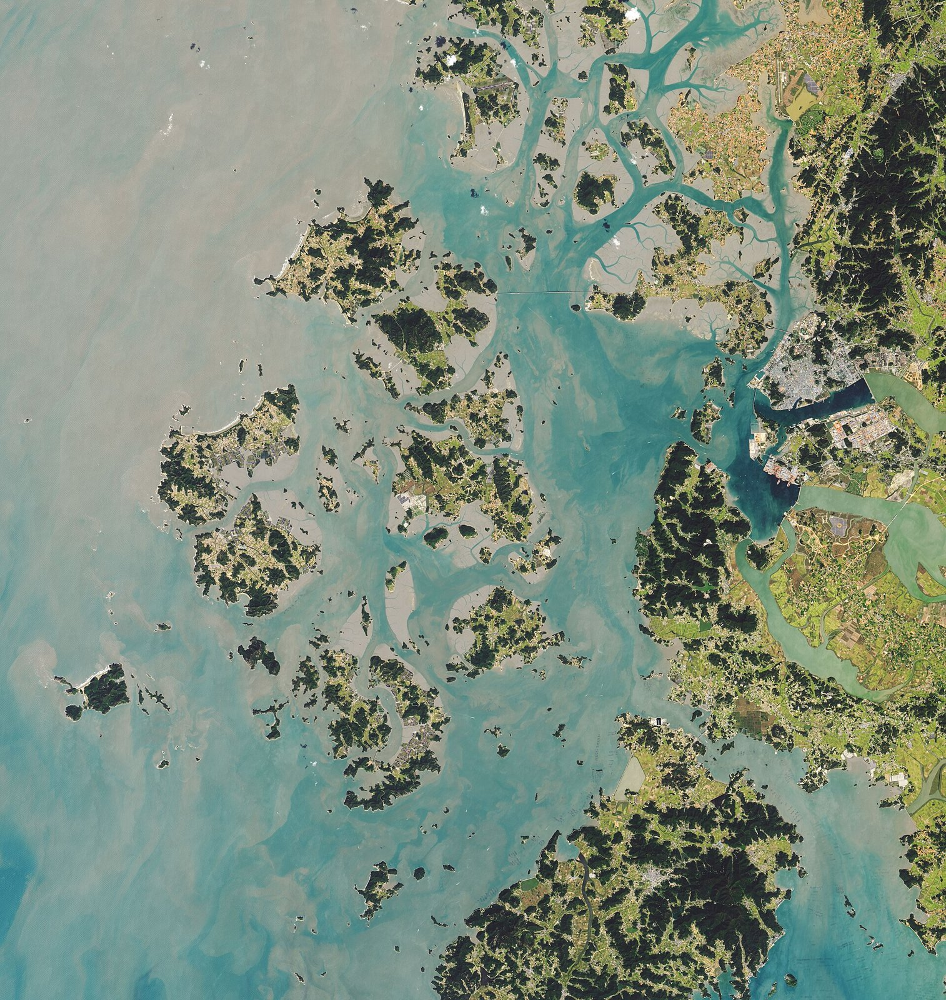

[한중수교 34년⑧] 부산에서 한국 갯벌이 22% 넓어졌고, 황해를 묶는 선언이 나왔다
2026년 7월 25일 부산 제48차 세계유산위원회, 「한국의 갯벌」 2단계 확대 등재
면적 15만6386㏊로 1단계보다 22% 넓어졌다… 여수·고흥·무안·서산이 더해졌다
같은 날 한국 갯벌과 중국 황해·보하이만, 북한 연안습지를 한 네트워크로 묶는 부산선언
AI경세제민=김갑봉 기자 | 2024년 이 연재는 중국 장쑤성 옌청의 황해 습지와 한국 갯벌이 동아시아 철새 이동경로의 핵심이라고 썼다. 두 나라가 함께 지켜야 한다는 이야기였다. 2026년 7월 25일 부산에서 그 말이 문서가 됐다.

※ 이 연재는 2024년 인천투데이에 실린 「한중수교 32년」 연재를 잇는다. 논지는 이어받되 수치와 사실은 2026년 10월 기준으로 다시 확인해 썼다.
2026년 7월 25일, 부산
제48차 유네스코 세계유산위원회가 부산 벡스코에서 열렸다. 7월 25일 「한국의 갯벌」 2단계 확대 등재가 확정됐다. 한국이 당사국이어서 피에르 파예 부의장이 회의를 주재했다.
확대된 유산 면적은 15만6386헥타르다. 완충구역은 10만5303헥타르다. 1단계보다 약 22% 넓어졌다.
기존의 서천·고창·신안·보성순천 갯벌에 여수와 고흥, 무안, 서산이 더해졌다. 보성순천 갯벌은 여수와 고흥까지 늘어 여수만 전체를 아우른다. 이제 여섯 개 구성 요소로 이뤄진다.
2018년 반려, 2021년 조건부, 2026년 확대
쉽게 온 길이 아니다.
2018년 첫 신청은 지도 축척과 관리 주체 같은 형식 요건을 이유로 반려됐다. 2021년에는 국제자연보전연맹(IUCN)이 면적이 모자란다며 반려를 권고했다. 한국은 철회하지 않고 협상을 택했고 21개 위원국 가운데 13개국이 공동 서명한 수정안이 채택됐다. 위원회는 생태적 완전성을 높이기 위해 2단계 확대를 하라고 요구했다.
2026년의 심사는 '중대한 경계 변경' 절차로 진행됐다. 새로 신청하는 것과 같은 수준의 평가를 받는 절차다. 한국 세계유산 가운데 이 절차로 승인받은 첫 사례다.
IUCN은 체계적인 과학 분석과 폭넓은 지역사회 협의를 높이 평가했다. 생물다양성과 멸종위기종에 관한 기준(x)도 충족했다. 조사에서 동식물 2454종이 확인됐고 그 가운데 새가 216종이다.
같은 날 나온 부산선언
같은 날 「황해 갯벌·연안습지 보전 부산선언」이 나왔다. 한국의 등재추진단과 유네스코, 동아시아-대양주 철새이동경로 파트너십(EAAFP), 그리고 중국 옌청 습지관리센터가 함께 발표했다.
선언은 한국의 갯벌과 중국의 황해-보하이만 철새보호구, 북한이 잠정목록에 올린 연안습지를 하나의 생태 네트워크로 본다. 세 곳을 따로 보던 틀을 바꾼 것이다.
다만 자발적이고 구속력이 없다. 계획된 협력은 공동 조류·조간대 모니터링과 자료 공유, 외래종 스파르티나 관리다. 첫 기술조정회의는 12개월 안에 열기로 했다.
2024년 연재가 옌청에서 본 미루사슴공원과 황해 습지가 이 네트워크의 중국 쪽이다. 그때는 취재 대상이었고 지금은 협력 상대다.
북한이 들어온 자리
부산선언에서 눈여겨볼 대목은 북한의 연안습지가 함께 들어간 점이다.
새는 국경을 모른다. 시베리아에서 내려와 중국 황해와 북한 서해안, 한국 갯벌을 거쳐 오스트레일리아까지 간다. 한 곳이 끊기면 전체가 끊긴다.
남북 관계가 막혀 있어도 생태 협력은 다른 통로가 될 수 있다. 구속력 없는 선언이지만 북한의 연안습지가 문서에 적혔다는 사실 자체가 자리를 만든다.
다음은 강화다
세계유산위원회는 지역과 광역자치단체의 지지를 바탕으로 3단계 확대를 하라고 강하게 권고했다. 인천의 강화 갯벌이 이미 후보로 거론된다.
인천에 이 일이 걸린 까닭은 분명하다. 강화 갯벌은 한강 하구에 있고 그 너머가 북한이다. 생태로는 하나이고 행정으로는 갈린 자리다. 3단계 확대가 이뤄지면 세계유산 경계가 남북 접경에 닿는다.
유네스코는 위협 요인도 짚었다. 연안 개발과 해상풍력, 오염, 어업 감소, 기후변화를 계속 지켜보라고 했다. 보전과 개발이 같은 바다에서 부딪친다는 뜻이다. 해상풍력이 위협 목록에 들어간 대목은 인천이 추진하는 사업과 바로 걸린다.
34년에 생긴 다른 종류의 협력
수교 34년의 한중 관계는 대부분 사고팔고 투자하는 이야기였다. ①편부터 ⑦편까지가 그랬다.
갯벌은 다르다. 사고파는 것이 아니라 함께 지키는 것이다. 한쪽이 이익을 보면 다른 쪽이 손해를 보는 구조가 아니다. 중국 옌청의 습지가 살아 있어야 한국 갯벌의 새도 온다.
희토류를 쥐고 흔드는 관계와 철새를 함께 세는 관계가 같은 두 나라 사이에 있다. 2026년 7월 25일 부산에서 나온 선언이 그 두 번째 관계의 문서다. 구속력이 없다는 것이 약점이자, 정치가 흔들려도 남을 수 있는 이유이기도 하다.
다음 편에서는 사람이 오가는 길, 무비자와 인적 교류를 본다.
참고문헌
·"반려 뒤집고 22% 넓힌 '한국의 갯벌'…다음 경계는 황해", 아시아경제, 2026년 7월 25일. https://view.asiae.co.kr/article/2026072521125731102
·"멸종 위기 철새 쉬어가는 길목, 세계유산 '한국의 갯벌' 넓어졌다", 한국일보, 2026년 7월 25일. https://www.hankookilbo.com/news/article/A2026072513300000761
·"멸종위기 철새의 낙원…한국 갯벌, 유네스코 '확대 등재' 확정", 헤럴드경제, 2026년 7월 25일. https://biz.heraldcorp.com/article/10819935
·유네스코 제48차 세계유산위원회, 부산 벡스코, 2026년 7월.
·「황해 갯벌·연안습지 보전 부산선언」, 2026년 7월 25일.
·한국의 갯벌 세계유산 누리집. https://www.getbolworldheritage.org/
※ 이 기사는 AI 프로그램 클로드를 활용해 작성했습니다.
관련기사
- [한중수교 34년⑨] 무비자 중국인 10만명, 무단이탈은 21명이었다
- [한중수교 34년⑦] 전국 외투기업의 53%가 인천경제자유구역에 있다
- [한중수교 34년⑩] 한한령 10년, 업계가 보는 해제 기준은 "1만석 단독 콘서트"
- [한중수교 34년⑥] 중국 진출 한국 기업 32%가 "5년 안에 접거나 옮기겠다"
저작권자 © AI경세제민 무단전재 및 재배포, AI학습 및 활용 금지